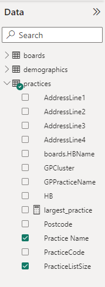
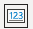
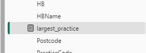
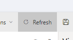
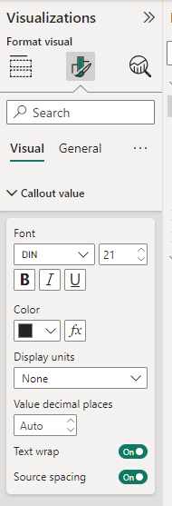

No feedback found for this session
BI for Beginners (service version) Session 4
Power BI
beginner
Session materials
Ideally, you’ll use the data that you wrangled during the previous session. But if that’s not suitable, use this data instead:
Session outline
- In this session, we’re going to build out the GP practice size dashboard from last time
- we’ll use the same data as the last session
- we’ll introduce DAX, which is the main formula language used in Power BI
- we’ll use DAX to write some measures, which will help us summarise our data
Recap
- we did lots of data wrangling last week using Power Query
- that’s designed to do data loading and tidying - so we tried removing some data, reshaping data, and joining data,…
- but there’s another whole language in Power BI to let us do things with that tidy data: DAX (annoyingly, Data Analysis eXpressions)
- similar to Excel formulas
Major differences between DAX and Excel formulas
- Excel takes a cell or range of cells (like A4)
- DAX functions take a column or table as reference, and cannot use e.g. cell ranges
- Excel formulas show their results directly in the cell
- DAX formulas need to be added to a card (or similar)
- also a grab-bag of minor differences (no mixed columns data type, date and time functions, different lookup mechanics)
Set up
Task
- open your dashboard from the last session
- add a new report page, and name it measures
- remind yourself about the data we’re working with
DAX first steps
Task
- in the model view, click New measure
- in the formula bar, add
largest_practice = MAX(practices[PracticeListSize])
DAX queries
The general way of building a DAX formula is as follows:
measure = FUNCTION(table[column])
- note the [square brackets] for column names
- we wrote a simple DAX formula in the first session, when we calculated a column using the formula
AvailableBeds = [BedComp] - [ClosedBed] - in this session, we’re going to concentrate on using DAX to write measures
WTH are measures?
- measures are Power BI lingo for calculated data summaries
- calculated columns, as we’ve seen before, let you make new columns from existing data
- measures allow you to make non-column summaries of your data - like an average
DAX queries
For our example, our measure is called largest_practice, and we want it to report the largest practice in each health board. Our DAX-based measure works as follows:
- our data table is called practices
- our column is PracticeListSize
- we’re using the
MAX()function to find the largest value (exactly like Excel)
largest_practice = MAX(practices[PracticeListSize])
Adding our measure to our report
- we should be able to add our largest_practice measure to our report
- switch back to the report tab
- you should see the largest_practice measure appear in your practices data 
Task
- add a new card 
- in our new measures page, drag the largest_practice measure into that card
- we also want to be able to look at different boards, so add a slicer using the HBnames from the practices table
Concatenating
- so far, our
largest_practicemeasure is ugly-but-functional - we can use the concatenate operator (
&) to beautify it
Task
- edit your
largest_practicemeasure (go to the model view and select the measure in the data pane) - you can insert text by “quoting” it, and using
&to join it to the result of yourMAX()- for instance,
largest_practice = "Largest practice: " & max(practices[PracticeListSize]) & " patients"
- for instance,
- go back to the report, and refresh the report 
- you can also use the format visual section to change the font size, and drop/alter the category label
Core DAX functions
- several useful DAX functions work in basically the same way as
MAX() - let’s try them out now
Task
- make a new measure called
average_practice - try
average_practice = AVERAGE(practices[PracticeListSize]) - add this to a new card to test it
- now tweak with concatenated text
-
COUNT(), andMIN()should also work in the same way
Combining functions
- most measures will need more than one DAX function
- we combine functions just like Excel, by bracketing them together
-
function1(function2(data))does function 2 on the data, then function 1 on that result - when you’re reading/building formulas with many functions, two top-tips:
- make sure you match your brackets
- read from the inside out
Beautifying measures
- our average_practice measure is pretty ugly
- a whole number value would be more suitable
Task
- click on the average_practice measure, which should read
average_practice = AVERAGE(practices[PracticeListSize]) - add the
INT()function, which converts a number to an integer (whole number)- we want
INT()to wrap around theAVERAGE()function average_practice = INT(AVERAGE(practices[PracticeListSize]))
- we want
Combining functions for number formatting
- alternatively, we could round that result using
round -
average_practice = ROUND(AVERAGE(practices[PracticeListSize]), -2)- the
-2specifies the number of decimal places
- the
- care with the brackets!
- you might prefer to do simple rounding in the format visual area 
Filter
-
FILTER()is the last DAX function we’re going to look at - it lets us filter our data based on conditions
- say we want to count how many big practices (more than 10000 patients) we have…
big_practices = countrows(filter(practices, practices[PracticeListSize] > 10000))- let’s read this from the inside-out
-
filter(practices, practices[PracticeListSize] > 10000)applies the filter function over the whole practices table - it finds all the rows where PracticeListSize is greater than (>) 10000
- those rows are then counted by
countrows() - finally, we save that number into our measure named
big_practices
-
Beautifying our measures
- that’ll be another ugly-but-functional measure
- we’ll use an alternative way of beautifying this one, to avoid making the formula too complicated
- measures can contain measures
- instead of the table[column] format we’ve been using, we refer to measures by wrapping them in single square-brackets: [measure]
- let’s create this now
Task
- add a new measure with the formula
big_practices = countrows(filter(practices, practices[PracticeListSize] > 10000))to obtain the filtered count of big practices - create a second new measure
nice_big_practices = [big_practices] & " practices with more than 10000 patients"- add nice_big_practices to a new card
Task
- Please make a new measure named nice_average_practice
- Use concatenation to make the average_practice measure nicer to read
- Update your average measure card in the report
More interesting filters
-
FILTER()is one of the big building-blocks of Power BI - we can use it as a way of looking up matching data
- for example, to find the name of the largest practice, we can:
largest_practice_name = CALCULATE (
VALUES (practices[Practice Name]),
FILTER (
ALL(practices[PracticeListSize]),
practices[PracticeListSize] = MAX (practices[PracticeListSize]
)
)
)-
FILTER()finds the largest practice -
VALUES()returns the corresponding value from the Practice Name column -
CALCULATE()joins theFILTER()andVALUES()parts of the expression
DAX resources (beginners)
- DAX sandbox - dax.do
- DAX introduction on the Microsoft site
- introduction to DAX from Data Flair is particularly useful if you have a bit of prior experience
- Saurabh dasgupta’s DAX cheat sheet
DAX resources (advanced)
- DAX reference
- DAX formatting utility
- Helpful tutorial on DAX variables
- Marco Russo and Alberto Ferrari’s book The Definitive Guide to DAX: Business intelligence for Microsoft Power BI, SQL Server Analysis Services, and Excel is the standard big reference book
- I’ve also heard good things about DAX Studio as a helper for writing more complex DAX functions - broadly analogous to an IDE for DAX